Одиночный памятник
Арка с колоннами и одним портретом
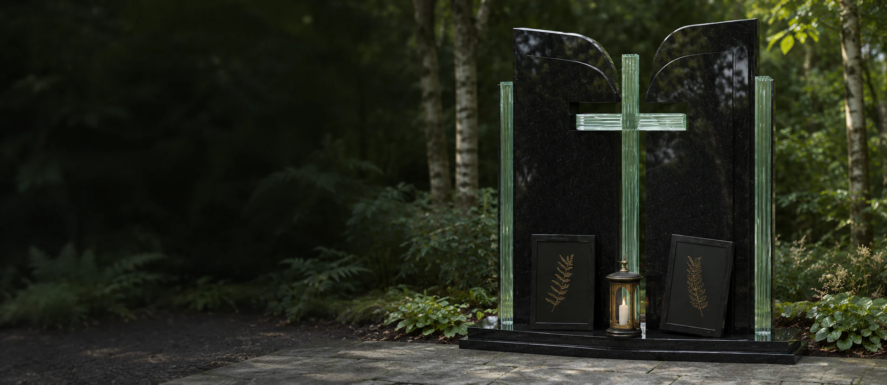
Одиночные и семейные памятники. Подберите форму, камень и оформление в 3D.
Арка с колоннами и одним портретом
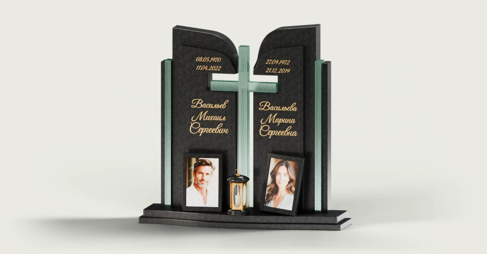
Две стелы на общем основании
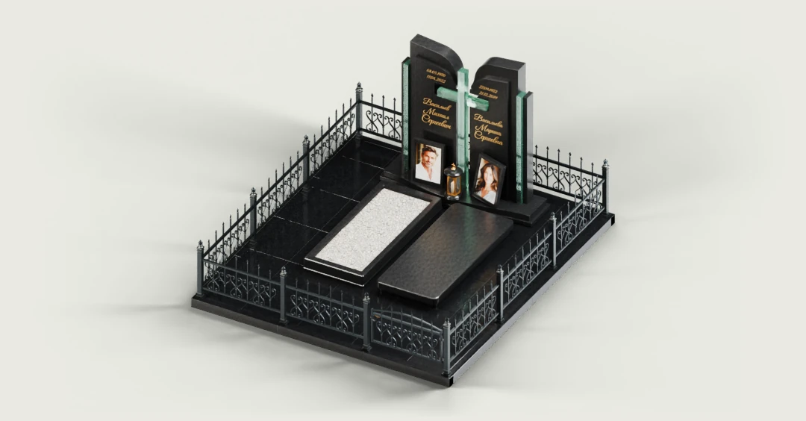
Памятник с оформлением участка
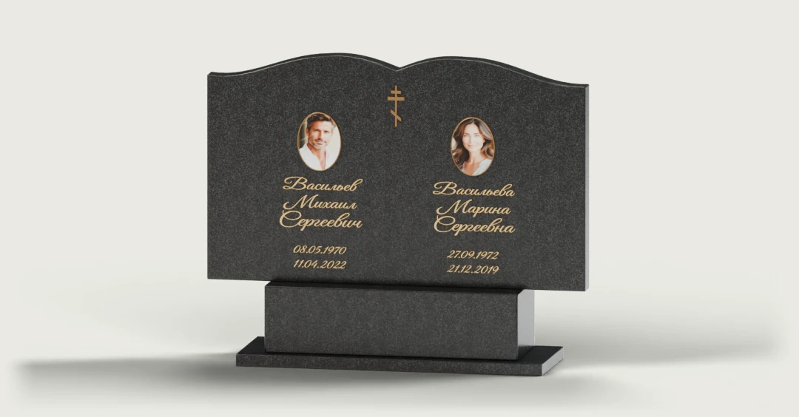
Парный памятник · B-05
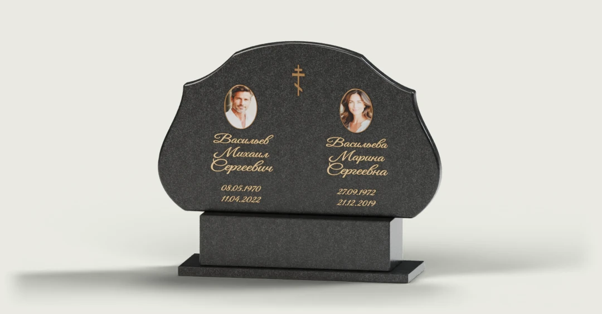
Парный памятник · B-20
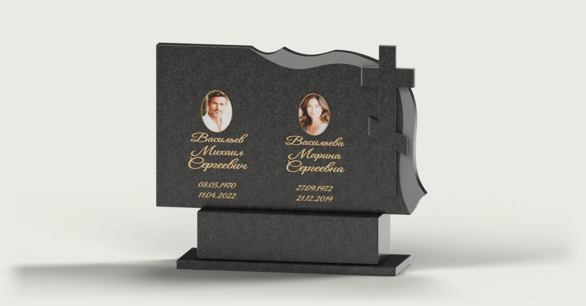
Парный памятник · B-37
Здесь появятся проекты, которые вы отметите закладкой в каталоге.
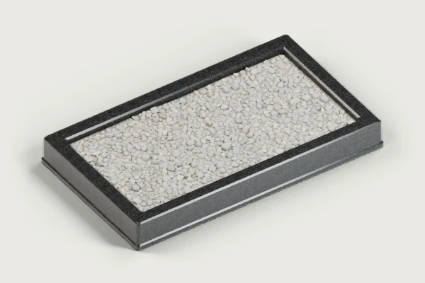
Прямой цветник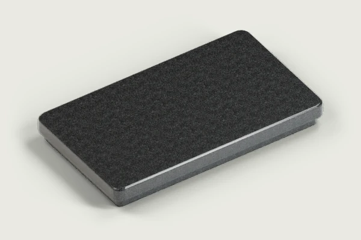
Сплошная плита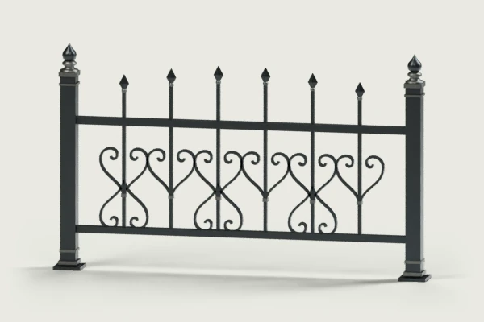
Кованая ограда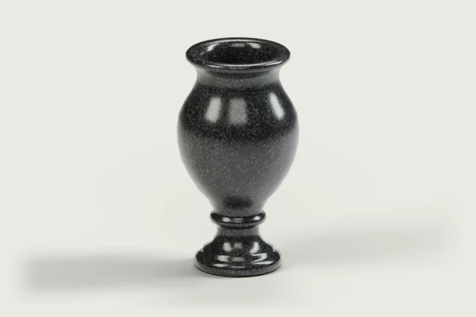
Гранитная ваза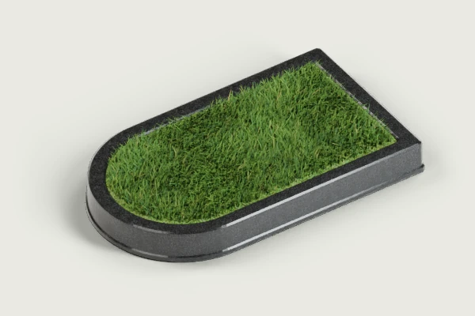
Скруглённый цветник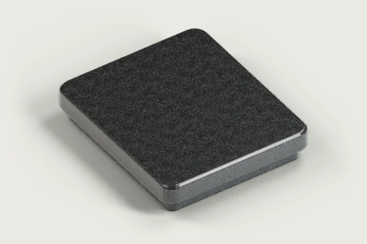
Половинная плита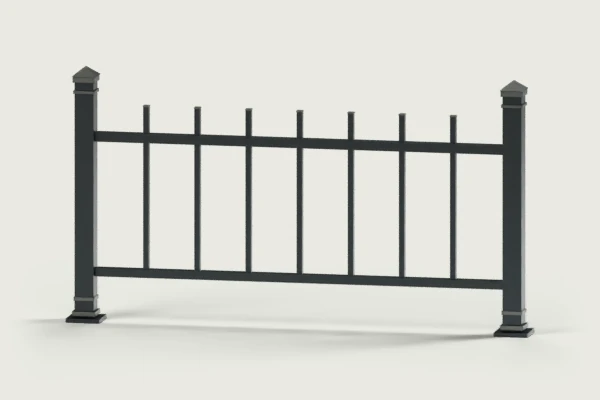
Простая ограда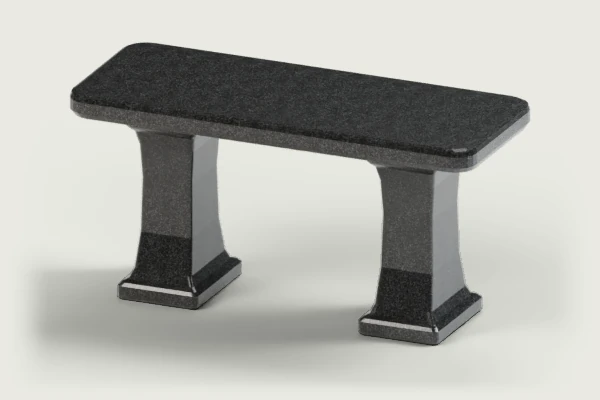
Гранитная скамейка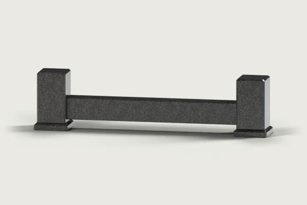
Прямой гранитный цоколь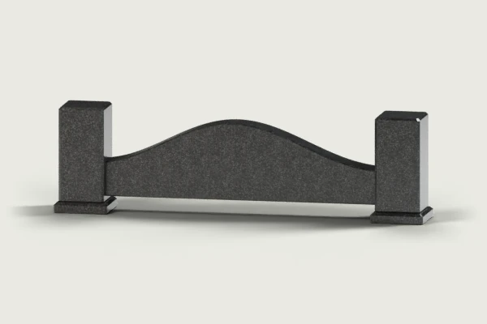
Волнистая ограда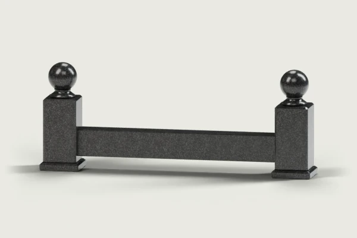
Ограда с шарами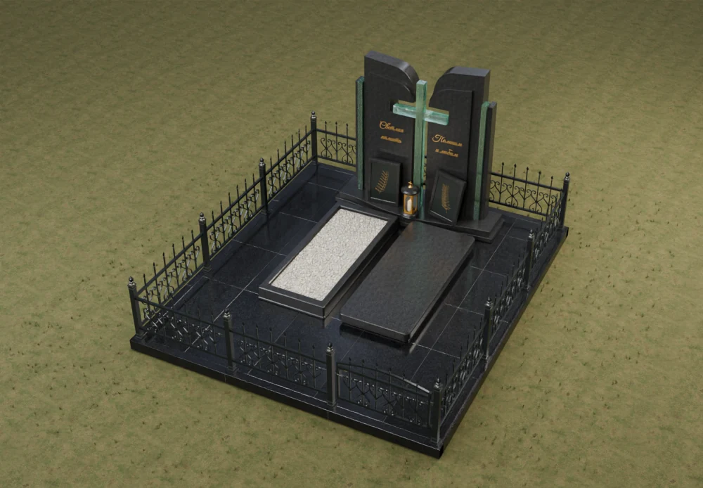
Цветник и гранитная плита у общего памятника. Кованая ограда очерчивает границы участка.
Сравните рисунок камня и примерьте выбранный оттенок на памятнике.
Разместите плиту, цветник и ограду вокруг памятника. Проверьте на плане, где останется проход и как откроется калитка.
Открыть план участкаИзмерьте участок в двух направлениях. Отметьте вход, существующие плиты и свободный проход. Занесите размеры в лист замера.
Скачать лист замера PDFВозьмите исходное фото с чёткими чертами лица. Примерьте его в рамке и проверьте кадр крупным планом. Для каждой стелы можно выбрать своё фото.
Примерить фотографиюПлита закрывает место захоронения. Для цветника выберите живой газон или мраморную крошку. Обе стороны парного памятника можно оформить по-разному.
Выбрать наполнение в 3DДа. Откройте парный памятник и выберите левую или правую стелу. Для каждой можно загрузить своё фото и изменить имя, отчество, фамилию и даты.
В конструкторе выберите вид «Сверху». На вкладке «Участок» укажите положение входа и включите «Открыть калитку». На плане видно, куда отходит створка и как рядом расположены плиты и скамейка. Прогуляться по аллее и обойти памятник можно с высоты человеческого роста.
Избранные модели и настройки конструктора хранятся в этом браузере. На том же устройстве можно вернуться к проекту и продолжить редактирование.